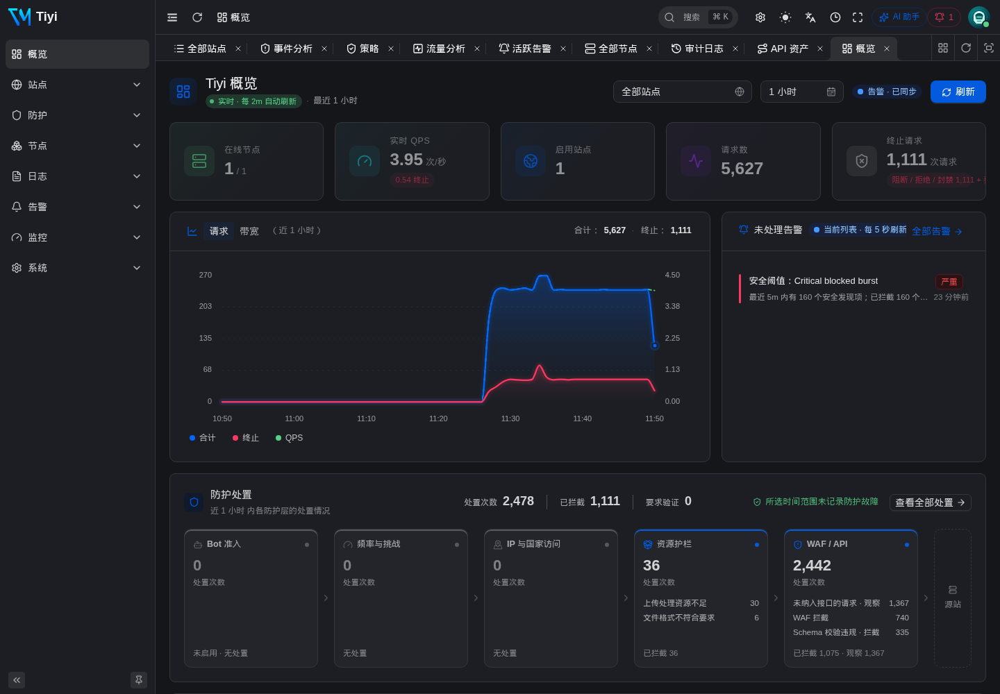
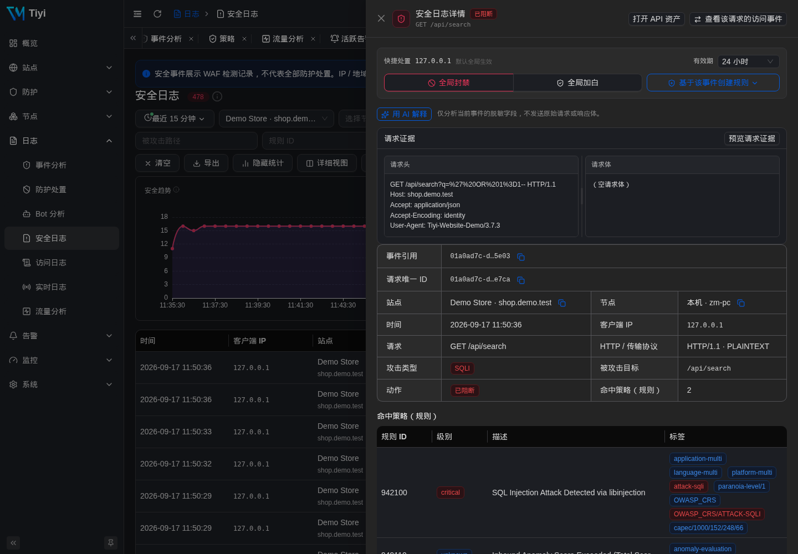
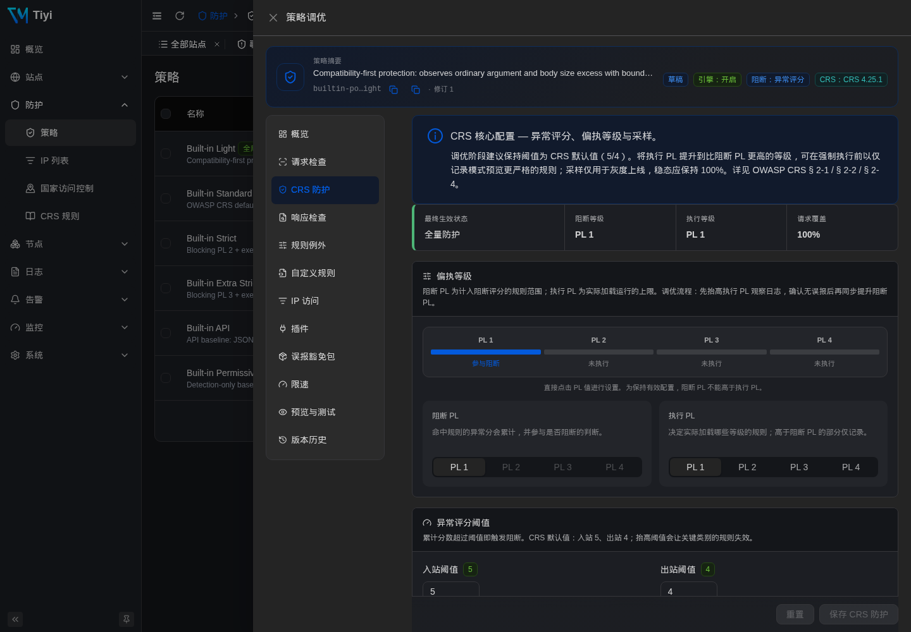
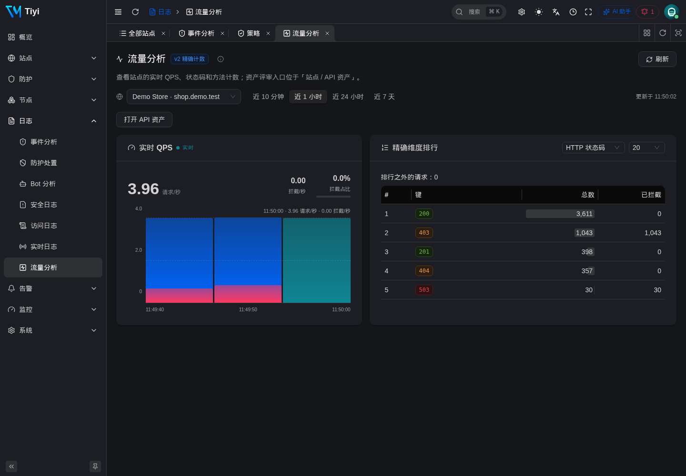
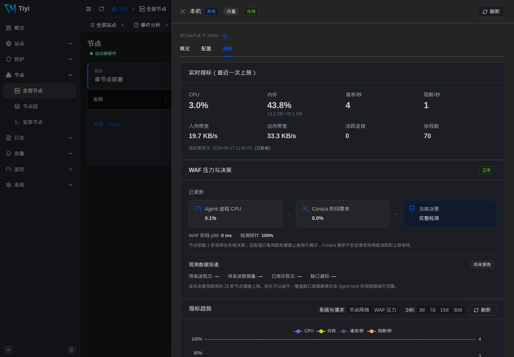
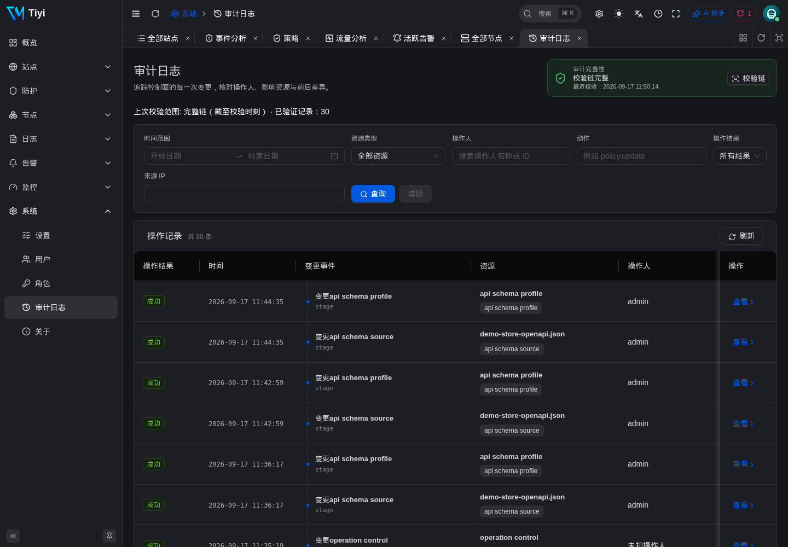

Tiyi 是生产级的 WAF、反向代理与管理平面 —— 集成于一个 Go 可执行文件中。 Caddy + Coraza + OWASP CRS 4 + SQLite，连同管理后台一起内置。 无需 Docker、无需外部数据库、无需 Redis。从下载到拦截真实攻击只需五分钟。

Tiyi 用一个 Go 进程取代了四服务的 docker-compose，并加入了运维真正需要的能力：实时配置投递、审计链、遥测，以及一个同时驱动 UI 与 CLI 的强类型 API。
Coraza 把结构化的策略对象编译成 SecLang。按站点覆盖、偏执等级、评分阈值、排除包 —— 全部不需要 fork 规则集。
HTTP-01、DNS-01（Cloudflare 已生产可用，Route53/Aliyun 提供凭据校验桩）、通配符证书、企业上传证书，所有节点协调续期。
一个主机、一张证书、按路径前缀分流到多个上游池 —— API 网关式分发。每条路由都有各自的应用后健康探测；未命中的路径回退到站点默认上游或严格 404。每条访问日志都记录服务它的 route_id 与 upstream_id，且路径范围在 WAF、IP 列表与限速器之间以同一方式规范化。
同一份 proto 同时驱动 Vben Admin UI、tiyi CLI 与节点流。每个写入路径只有一处；CLI 与 API 由编译期保证同步。
主节点 + 热备 + N 个纯节点，通过长连 gRPC 双向流。配置实时推送在 ~50 ms 内到达每个节点；控制平面失联时节点继续按上一份已知配置代理流量。
开桶式遥测管道：Misra-Gries Top-K、采样环、按站 URL 前缀树。本地管理 socket 上提供 Prometheus 导出器。无需外部时序数据库。
每一次变更 —— 包括 IP 列表绑定、限速端点、信任配置 —— 都会写入一行已签名的审计记录。每日锚点提交与 UI 内的校验链按钮，让防篡改成为日常操作。
安全、访问、错误、审计事件以 RFC 5424、CEF 或 LEEF 格式，通过 TCP / UDP / unixgram 尽力转发。对接 Splunk、Elastic、Sentinel、Wazuh 都行。
统一信任管道终结了零散的 XFF 解析。自动拉取 Cloudflare、Fastly、Akamai、CloudFront、Front Door、GCLB 的 CIDR；按站点覆盖；提供回溯每个 header 的explain工具。
OWASP CRS 4.25 已嵌入到二进制中；CRS 与排除包均支持离线归档导入；私钥与凭据使用 KEK 信封加密；ed25519 配置签名公钥在节点首次接入时固定。
规则按 for 时长去抖，随后驱动 pending → firing → resolved 生命周期：持久化通知 outbox、重复通知、分组、抑制与静默。Webhook、Slack、PagerDuty、飞书、企业微信 —— 通道密钥以 KEK 信封加密落库。
security_incident 层把同 (站点, 客户端 IP, 攻击类别) 的事件在滑动窗口内折叠为一个可操作的事件 —— 严重等级上卷、生命周期可追踪，创建即打上 MITRE ATT&CK + 杀伤链 + 地理标签，并可选默认关闭的自动响应。
一个可选、默认关闭的 LLM 层，位于确定性 WAF 之侧 —— 绝不进入请求路径。解释任意事件或单条日志、把自然语言问题翻译成日志查询，并获得需你手动批准的策略调优或自定义规则草案。provider 无关（兼容 OpenAI、Azure、Ollama、vLLM）；每条提示都经脱敏、双重 RBAC 把关并限速。
JWT 带刷新、本地账号 Argon2id、OIDC 单点登录共用同一登录界面，52 个细粒度权限贯穿每一个 API 与 CLI 命令。
tiyi apply -f site.yaml 会预览变更集、按资源显示 diff，并产生与 UI 保存完全相同的审计记录。同一个验证器、同一个写入器 —— 由架构保证。
下方每一张截图都来自 v3.0.0 的实际运行实例。同一份数据平面，同一份 UI，同一份 RPC。
QPS、累计请求与拦截、按标签的攻击分布、Top 攻击者、实时告警面板 —— 全部由驱动 Prometheus 导出器的同一条遥测管道供数据。
每个请求一行，附带 Coraza 规则 ID、严重等级、消息与攻击标签 —— 通过宽容的解析器从 ModSecurity 方括号 payload 中提取，而不是依赖 Coraza 的强类型访问器。

内置 Strict / Standard / Permissive 三套模板，每一次保存都会编译成确定的 SecLang。按站点覆盖阈值、偏执等级、采样率会叠加在共享 bundle 之上。

分片入流环、10 秒开桶聚合、每日 SQLite 分区、Misra-Gries Top-K 带 __other__ 桶让 SUM(*) 等于真实流量。可通过 REST API 读取，可让 Prometheus 抓取，也可在这里浏览。

每一次变更都会写入 SQLite、自增单调版本号，并把签名 bundle 推送到每一个开放的节点流。节点每 15 s 协调一次作为兜底。更新按版本号幂等 —— 重放与乱序都安全。

每一次变更都追加一行哈希链记录，归属到 JWT subject。每日锚点提交与 UI 上的校验链按钮，让合规变成日常操作而非纸面要求。

Tiyi 是商用闭源软件，上游保留 Apache-2.0。社区版、Pro 与企业版使用同一个二进制；签名授权只提高远程节点配额。控制平面运行在你自己的硬件上。
适合个人实验室、副项目，或想先了解 Tiyi 的团队。
本地单机节点，包含完整产品能力。
适合在少量节点上跑生产的团队。
每个 Tiyi 集群计费。年付可选。
适合受监管环境、气隙站点、全球边缘。
按机群规模与 SLA 量身定价。
有特定需求？support@tiyisec.com · 三个版本使用同一个二进制并包含完整 WAF 能力；区别在于授权规模、支持与供应链服务。
日期是目标，不是承诺。条目随验证而推进，而非随乐观而推进。
Tiyi 是一个二进制、一份配置、一个心智模型。在你已经拥有的服务器上，五分钟就能装好。